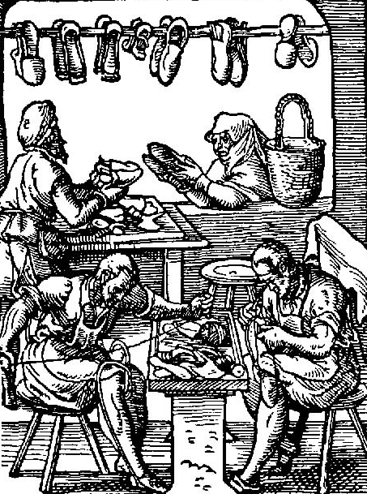
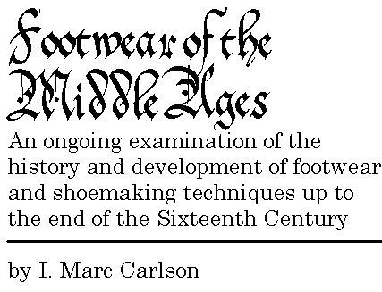

 |
11 November 1995
(Electronic Version 8.3 -
26 October 2001) |
|
 |
- Copyright
- Acknowledgements
- Introduction
- What's New?
- Glossary of Historical Shoemaking
- Historical Shoes
- Tools and Techniques
- Shoe Designs and Discussions:
- General Research
Medieval:
- Shoes in Greenland: A comparison to
shoes and shoemaking on the Continent
- Charters
- Shoemaker Pictures
- Shoemaking and Saints
- Some Historical Shoemaking Texts
Generally Not Medieval:
- Bibliography of ritual
shoe concealment literature
- Glossary of Footwear Terminology
- Terminology Cross-Reference
- General Glossary of Shoe Types
- Shoe Superstitions
- General Instructions for Making Shoes for
Re-enactors and Others
- Bibliography
- Links
MARC-CARLSON@UTULSA.EDU
(LIB_IMC@CENTUM.UTULSA.EDU; (old) LIB_IMC@VAX1.UTULSA.EDU; (old)
IMC@VAX2.UTULSA.EDU))
Footwear of the Middle Ages, Copyright � 1996, 1998, 1999, 2000, 2001,
2002, 2003, 2004, 2005 I.
Marc Carlson